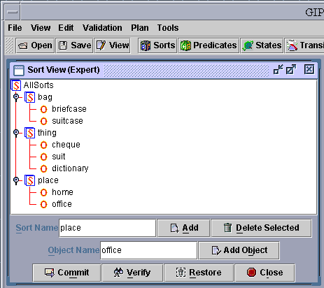
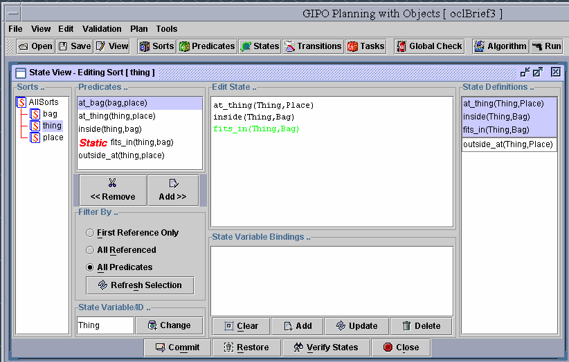
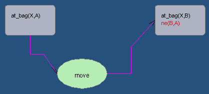
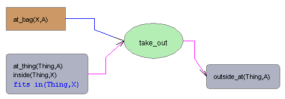

Select the "new Domain" function under the menu "File". The domain properties box will appear. You must provide a domain name at this time, though you may edit the details provided again at a later stage. The domain name should be a single word beginning with a lowercase letter. For standard non hierarchical domains leave the "Domain is Hierarchical" check box unchecked.
Type a name for the new domain, for example, "briefcase".
Figure 1 Create a new domain
Select "Sorts" button on the toolbar to bring up the object sort editor window. "Sort" refers to the type of an object.
Click on the tree node in order to create it's sub level sort/object.
Type string text into the text box "Sort name", then click add button to add the new sort to the sort tree.
After clicking on the tree node, type an object name in the text box "Object Name", the click on the button "Add Object" to add this new object to the sort tree.
Repeat above procedure to create 3 sorts: bag, thing, place. Under sort "bag", there are two objects defined as "briefcase" and "suitcase". Define 3 objects for sort "thing": "cheque", "suit", and "dictionary". Two objects "home" and "office" for sort "place".
sorts/objects can be moved to the other branches in the tree window by drag and drop.
When everything is ready, click "Verify" button to verify sorts. If all sorts are valid then click "Commit" button to add these sorts to the "briefcase" domain.
FinallycClose the "Sort View" window.

Figure 2 Editing sorts
Click "Predicates" button on the toolbar.
Type "at_bag" as a new predicate's name in the text field labelled "Name". Click button "New", then this predicate will appear in the "Predicates ... " window, and also appears in the "Edit Predicate" window.
To build members of the predicate, drag "bag" then "place" from the sort tree window to the new created predicate in the "Edit Predicate" window. The order of the members will depend on where it's been dropped.
When editing an existing predicate, select the predicate from the predicate list, then it's content will appear in the edit window. Repeat previous procedure to edit.
Repeat previous procedure to built 5 predicates, at_bag(bag,place), at_thing(thing,place), inside(thing,bag), fits_in(thing,bag), outside_at(thing,place), shown in the following figure. Select the predicate "fits_in(thing,bag)", click the check box "Is Static" to make it static.
To delete a predicate, first select it from the list, then click on the "Delete" button.
To rename a predicate, first select the proper predicate to bring it's content to the edit window. Gently left click on the node once, the predicate name node will be changed to the editable mode. Press return when the edit is complete to update the predicate.
To delete a predicate argument/member select the predicate to bring it's content to the edit window. Select the member to be deleted then right click to show the edit popup menu. Click on "cut" to confirm.
To reorder a predicates members/arguments, first select the proper predicate to bring it's content to the edit window. Use drag and drop to reposition the arguments.
When all editing procedures are finished, click "Verify" button to verify predicates. If all predicates are valid then click "Commit" button to add these predicates to the "briefcase" domain.
Close the "Predicate View" window.

Figure 3 Editing predicates
Click "States" button on the toolbar to bring up the "State Edit" window (Figure 4).
From the "Sort Tree" select a sort of a kind of object where the objects will change state as a result of applying actions during plan execution. Select "thing".
From the predicate list, select a predicate "at_thing(thing,place), click "Add" button to add it to the "Edit State ..." window (edit window). The selected predicate must refer to the selected sort.
Repeat the previous procedure to add all essential predicates to the edit window to form a definition of a legal state for the kinds of objects selected, “Thing”. For this case add the predicate "inside(thing,bag)" and fits_in(thing,bag) to the edit window.
Clicking on the variables of a predicate in the edit window will highlight this variable with a green underline, other associated variables (with same sort) will be also highlighted but with a red underline.
Right click on the green underlined variable will bring up a menu to rename this variable (Figure 5).
When the variable selected refers to the primary instance of the kind of thing for which we are defining the state attempting to rename this variable will produce an error message and the user will be instructed to use the “Change” state id button to change all instances of this variable name, in all legal states for this kind of object. (Figure 6)
Right clicking on the red underlined variable will allow the user to choose from three options: same, different, optional (Figure 7). Choosing "same" will set the red underlined variable to be the same as the green underlined variable; Choosing "different", an input box will appear to ask for a new name if the red underlined variable is currently the same as the green underlined variable, and a "ne(red underlined variable, green underlined variable)" clause will be added automatically; Choosing "optional", an input box will appear to allow the user to type in a new name, but no "ne" clause will be added.
To remove a predicate from the edit window, click on a variable of the predicate, then click on the "Remove" button.
For for the tutorial example , no extra editing is required; so click the "Add" button to add the new state to the state list on the right hand side of the window.
Repeat the previous procedure, to create another state which only contains one predicate "outside_at(thing,place)" (see figure 4).
When all editing procedures are finished, click the "Verify States" button to verify the elgality of all states defined. If all states are valid then click the "Commit" button to add these states to the "briefcase" domain.
Close the "States View" window.

Figure 4 Editing states

Figure 5 Rename function
Figure 6 Rename State ID
Figure 7 Other editing options
Click "Transitions" button on the toolbar to bring up the "Transitions" window (Figure 7).
Click on the "New" button on the top toolbar or the menu bar (Operator), a green circle (labeled as "Action ID") will appear on the editing canvas to represent the head (name) of the operator.
Double click on this circle object to bring up a dialog box to rename the operator to "move".
Click on the radio button "Add Necessary", then select the state "at_bag(Bag,Place)" from the substate list window. Click on the canvas, the left hand side statement of the necessary condition will appear on the canvas as a gray round rectangle, in the meantime, the right hand side statement appears as an empty round rectangle with flashing edges waiting for the user's input (Figure 7). The content of "Substate List" window has been updated to the states related to the same sort user just picked. Clicking on the state "at_bag(Bag,Place)" in the substate list window will specify the right hand side of the necessary condition and stop the flashing effect.
Change to edit mode by selecting the check box "Edit Mode". Drawing canvas will change to dark green. The system reaches a situation that all the variables of this operator can now be edited. "Zoom In" and "Zoom Out" function will help user to adjust the viewing scale.
Click on the click the variable "Place" (Figure 8). It will be highlighted with green underline, all other related (with same sort) variables will also be highlighted but with red underline. Right click on the green underlined variable to rename "Place" to "A". Right click on the red underlined variable will allow user to specify the relationship between the current red underlined variable and the green underlined variable (Figure 9). Choose option "Different", then type "B" in the popped input box. The finished transition is shown in Figure 10.
Click on the radio button "Add Conditional", then select the state "at_thing(Thing,Place), inside(Thing,Bag), fits_in(Thing,Bag)". Repeat previous procedure to build the operator "move" as shown in figure 11.
Click on the "Add" button on the top toolbar to save this operator to the "Operators list".
Repeat previous procedure to build the operator "put_in" (Figure 12) and "take_out" (Figure 13).
Be noticed that to save the operator to the domain for the other tools to use, "Commit" button needs to be clicked before leave this transition window.

Figure 7 Creating a necessary transition

Figure 8 Editing mode:
rename variable "Place" to "A"
Figure 9 Editing mode: specify right-hand side variable is different from left-hand side

Figure 10 Editing mode: finished editing one transition

Figure 11 move operator

Figure 12 put_in operator

Figure 13 take_out operator
Click "Tasks" button on the toolbar to bring up the "Tasks" window (Figure 14).
Click on the button "New Task", an input dialog box will appear. Type in a name "1" to represent the new task. then a new task named "oclTask_1" will appear in the "Task..." combo box.
Expand the tree to find the object "briefcase", click on the object, all related sub states for this object will be partially instantiated and displayed on the "states.." window (Figure 14).
Click the state to bring it to the editing window(Figure 15). Click on the variable "Place" to highlight the variable with green underline, in the mean time any associated variables (with same sort) will be highlighted with red underline (not in this case). Right click on the green underlined variable, a popup list will appear with two options: "home" and "office". Instantiate the variable by selecting "home" from the popup list. Be noticed that right click on a predicate (rather than any green underlined variables) will allow user to delete the predicate;
Click button "Add Initial" to add the current edited state as one of the initial states.
Repeat previous procedure to build initial and goal state as shown in Figure 16.
When all editing procedures are finished, click "Verify Tasks" button to verify tasks. If all states are valid then click "Commit" button to add this task to the "briefcase" domain.
Close the "Tasks View" window.
Figure 14 Task Dialog with completed Task Definition 
Figure 15 Instantiate states